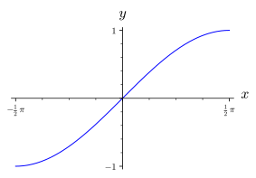
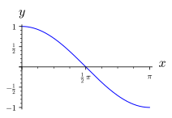
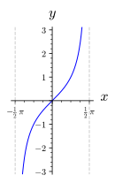

A função seno, isto é, \(f:\mathbb{R}\rightarrow \mathbb{R}\) tal que \(f(x)=sen(x)\) é evidentemente não injetiva, por exemplo, \(f(0)=f(2\pi)=0\text{.}\) Observe o gráfico da função seno abaixo.
Figura1.8.2.Gráfico da função \(sen(x)\text{,}\) com \(\frac{-5\pi}{2}\leq x\leq \frac{5\pi}{2}\text{.}\) Observando que se considerarmos a função seno restrita ao intervalo \(\left[ -\frac{\pi}{2}, \frac{\pi}{2} \right]\text{,}\) isto é, \(g:\left[ -\frac{\pi}{2}, \frac{\pi}{2} \right]\rightarrow \mathbb{R}\) tal que \(g(x)=sen(x)\text{,}\) então \(g\) é uma função injetiva. Veja o gráfico de \(g\) abaixo:

Figura1.8.3.Gráfico da função \(sen(x)\text{,}\) com \(\frac{-\pi}{2}\leq x\leq \frac{\pi}{2}\text{.}\) Sendo \(g\) uma função injetiva com domínio \(\left[ -\frac{\pi}{2}, \frac{\pi}{2} \right]\) e imagem \([-1, 1]\text{,}\) podemos definir a inversa de \(g\text{.}\) A função \(g^{-1}\) é denominada arco-seno e é denotada por
\begin{equation*}
g^{-1}(x)=arcsen(x)\quad \text{ ou } \quad sen^{-1}(x).
\end{equation*}
Nota1.8.4.
O domínio de \(g^{-1}\) é \([-1,1]\)
A imagem de \(g^{-1}\) é \(\left[-\frac{\pi}{2},\frac{\pi}{2}\right]\)
\(arcsen(x)=y \Leftrightarrow sen(y)=x\) e \(-\frac{\pi}{2}\leq y \leq \frac{\pi}{2}\)
Figura1.8.5.Gráfico da função \(arcsen(x)\text{,}\) com \(-1\leq x\leq 1\text{.}\)
Subseção1.8.2Função Arco-Cosseno
Definição1.8.6.
A função cosseno, isto é, \(f:\mathbb{R}\rightarrow \mathbb{R}\) tal que \(f(x)=\cos(x)\) não injetiva. Porém, se considerarmos a função cosseno restrita ao intervalo \([0,\pi]\text{,}\) isto é, \(g:[0, \pi]\rightarrow \mathbb{R}\) tal que \(g(x)=\cos{(x)}\text{,}\) notamos que \(g\) é uma função injetiva. Observe o gráfico de \(g\) na figura abaixo:

Figura1.8.7.Gráfico da função \(\cos{(x)}\text{,}\) com \(0\leq x\leq \pi\text{.}\) Como \(g\) é uma função injetiva com domínio \([0,\pi]\) e imagem \([-1,1]\text{,}\) podemos definir sua inversa \(g^{-1}\) que é denominada função arco-cosseno e é denotada por:
\begin{equation*}
g^{-1}(x)=arccos(x)\quad \text{ ou } \quad \cos^{-1}(x).
\end{equation*}
Nota1.8.8.
O domínio de \(g^{-1}\) é \([-1,1]\)
A imagem de \(g^{-1}\) é \(\left[0,\pi\right]\)
\(arccos(x)=y \Leftrightarrow \cos(y)=x\) e \(0\leq y\leq \pi\)
Figura1.8.9.Gráfico da função \(arccos(x)\text{,}\) com \(-1\leq x\leq 1\text{.}\)
Subseção1.8.3Função Arco-Tangente
Definição1.8.10.
A função tangente, isto é, \(f:\mathbb{R}\rightarrow \mathbb{R}\) tal que \(f(x)=\tan(x)\) não injetiva. Porém, se considerarmos a função tangente restrita ao intervalo \(\left(-\frac{\pi}{2},\frac{\pi}{2} \right)\text{,}\) isto é, \(g:\left(-\frac{\pi}{2},\frac{\pi}{2} \right)\rightarrow \mathbb{R}\) tal que \(g(x)=\tan{(x)}\text{,}\) notamos que \(g\) é uma função injetiva. Observe o gráfico de \(g\) na figura abaixo:

Figura1.8.11.Gráfico da função \(\tan{(x)}\text{,}\) com \(-\frac{\pi}{2}\leq x\leq \frac{\pi}{2}\text{.}\) Como \(g\) é uma função injetiva com domínio \(\left(-\frac{\pi}{2},\frac{\pi}{2} \right)\) e imagem \(\mathbb{R}\text{,}\) podemos definir sua inversa \(g^{-1}\) que é denominada função arco-tangente e é denotada por:
\begin{equation*}
g^{-1}(x)=arctan(x)\quad \text{ ou } \quad \tan^{-1}(x).
\end{equation*}
Nota1.8.12.
O domínio de \(g^{-1}\) é \(\mathbb{R}\)
A imagem de \(g^{-1}\) é \(\left(-\frac{\pi}{2},\frac{\pi}{2} \right)\)
\(arctan(x)=y \Leftrightarrow \tan(y)=x\) e \(-\frac{\pi}{2}\leq y\leq \frac{\pi}{2}\)
Figura1.8.13.Gráfico da função \(arctan(x)\text{,}\) com \(-4\leq x\leq 4\text{.}\)
Subseção1.8.4Função Arco-Cotangente
Definição1.8.14.
Se restringirmos o domínio da função cotangente ao intervalo \((0,\pi)\text{,}\) isto é, \(g:(0,\pi)\rightarrow \mathbb{R}\) tal que \(g(x)=cotg(x)\text{,}\) então \(g\) é uma função injetiva. Sendo assim, \(g\) admit uma inversa, \(g^{-1}\text{,}\) denominada arco-cotangente e denotada por